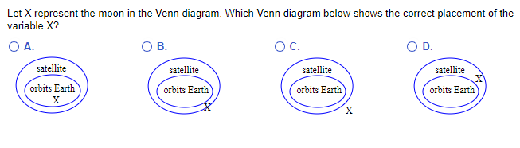
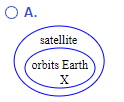
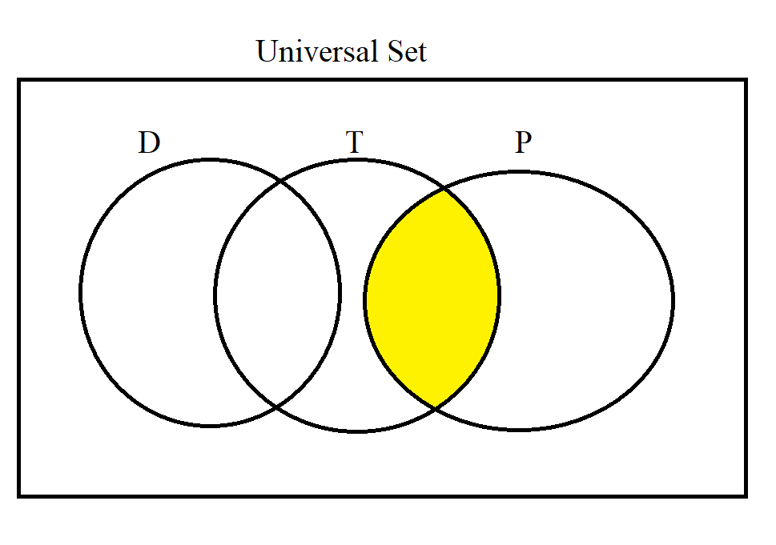
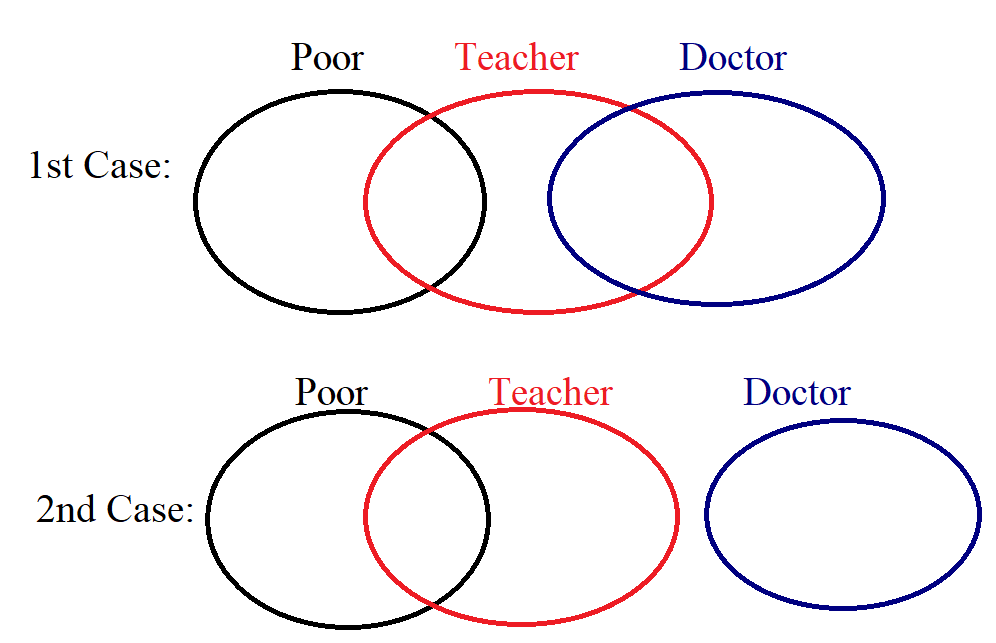
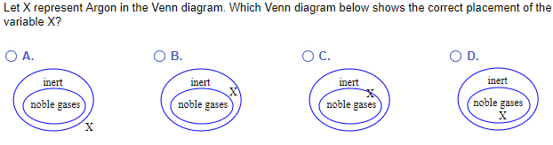
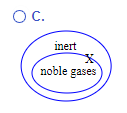
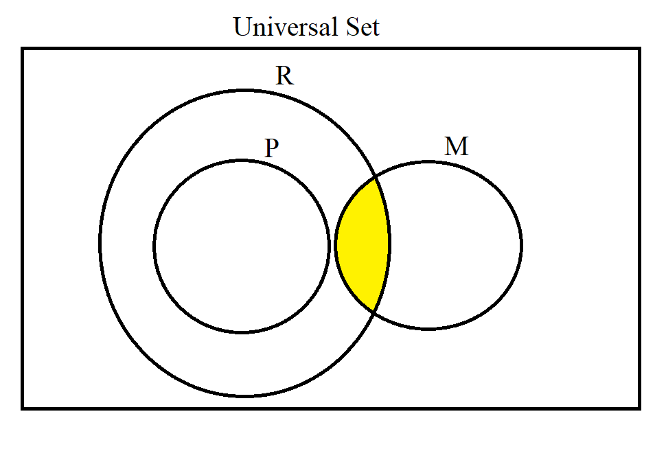
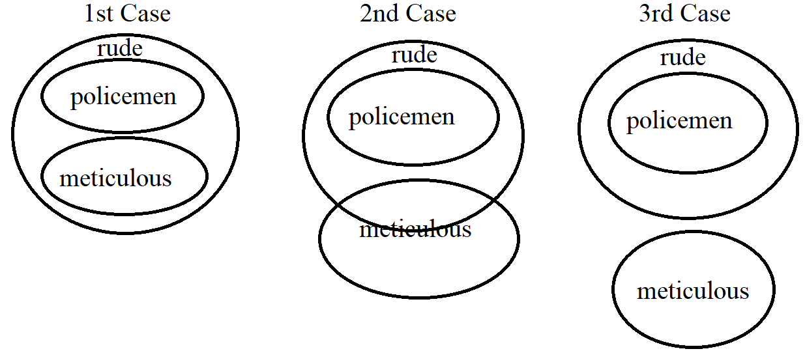
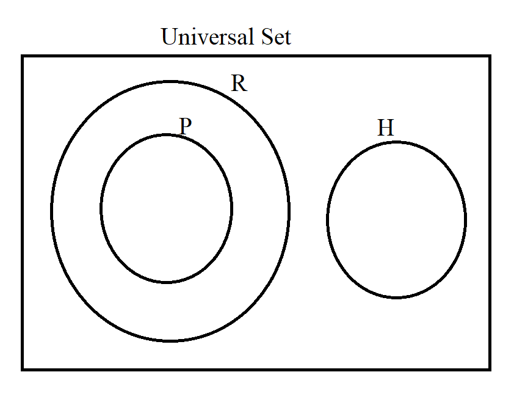

If there is one prayer that you should pray/sing every day and every hour, it is the
LORD's prayer (Our FATHER
in Heaven prayer)
- Samuel Dominic Chukwuemeka
It is the most powerful prayer.
A pure heart, a clean mind, and a clear conscience is necessary for it.
For in GOD we live, and move, and have our being.
- Acts 17:28
The Joy of a Teacher is the Success of his Students.
- Samuel Chukwuemeka
Unless stated otherwise:
Determine whether these arguments are valid or invalid. Show all work.
For symbolic arguments, use at least two methods: by Definition, by Formula and/or by the
Valid Forms of Arguments and Invalid Forms of Arguments for each argument as applicable.
For syllogistic arguments, use Euler diagrams or Venn diagrams as applicable.
(1.)
$
p \leftrightarrow q \\[2ex]
p \underline{\lor} q \\
\rule{1.2in}{0.3pt} \\
\therefore \neg q
$
| $p$ | $q$ | $p \leftrightarrow q$ | $p \underline{\lor} q$ | $\neg q$ |
|---|---|---|---|---|
| $T$ | $T$ | $T$ | $F$ | $F$ |
| $T$ | $F$ | $F$ | $T$ | $T$ |
| $F$ | $T$ | $F$ | $T$ | $F$ |
| $F$ | $F$ | $T$ | $F$ | $T$ |
| Premise 1 | Premise 2 | Conclusion |
| $p$ | $q$ | $p \leftrightarrow q$ | $p \underline{\lor} q$ | $(p \rightarrow q) \land (p \underline{\lor} q)$ | $\neg q$ | $[(p \rightarrow q) \land (p \underline{\lor} q)] \rightarrow \neg q$ |
|---|---|---|---|---|---|---|
| $T$ | $T$ | $T$ | $F$ | $F$ | $F$ | $T$ |
| $T$ | $F$ | $F$ | $T$ | $F$ | $T$ | $T$ |
| $F$ | $T$ | $F$ | $T$ | $F$ | $F$ | $T$ |
| $F$ | $F$ | $T$ | $F$ | $F$ | $T$ | $T$ |
(2.)
$
p \lor q \\[2ex]
p \\
\rule{1.2in}{0.3pt} \\
\therefore \neg q
$
| $p$ | $q$ | $p \lor q$ | $\neg q$ |
|---|---|---|---|
| $T\checkmark$ | $T$ | $T\checkmark$ | $F\times$ |
| $T\checkmark$ | $F$ | $T\checkmark$ | $T\checkmark$ |
| $F$ | $T$ | $T$ | $F$ |
| $F$ | $F$ | $F$ | $T$ |
| Premise 2 | Premise 1 | Conclusion |
| $p$ | $q$ | $p \lor q$ | $(p \lor q) \land p$ | $\neg q$ | $[(p \lor q) \land p] \rightarrow \neg q$ |
|---|---|---|---|---|---|
| $T$ | $T$ | $T$ | $T$ | $F$ | $F$ |
| $T$ | $F$ | $T$ | $T$ | $T$ | $T$ |
| $F$ | $T$ | $T$ | $F$ | $F$ | $T$ |
| $F$ | $F$ | $F$ | $F$ | $T$ | $T$ |
(3.)
$
p \rightarrow \neg q \\[2ex]
q \\
\rule{1.2in}{0.3pt} \\
\therefore \neg p
$
| $p$ | $q$ | $\neg q$ | $p \rightarrow \neg q$ | $\neg p$ |
|---|---|---|---|---|
| $T$ | $T$ | $F$ | $F$ | $F$ |
| $T$ | $F$ | $T$ | $T$ | $F$ |
| $F$ | $T\checkmark$ | $F$ | $T\checkmark$ | $T\checkmark$ |
| $F$ | $F$ | $T$ | $T$ | $T$ |
| Premise 2 | Premise 1 | Conclusion |
| $p$ | $q$ | $\neg q$ | $p \rightarrow \neg q$ | $(p \rightarrow \neg q) \land q$ | $\neg p$ | $[(p \rightarrow \neg q) \land q] \rightarrow \neg p$ |
|---|---|---|---|---|---|---|
| $T$ | $T$ | $F$ | $F$ | $F$ | $F$ | $T$ |
| $T$ | $F$ | $T$ | $T$ | $F$ | $F$ | $T$ |
| $F$ | $T$ | $F$ | $T$ | $T$ | $T$ | $T$ |
| $F$ | $F$ | $T$ | $T$ | $F$ | $T$ | $T$ |
(4.)
$
p \lor q \\[2ex]
\neg p \\
\rule{1.2in}{0.3pt} \\
\therefore q
$
| $p$ | $q$ | $p \lor q$ | $\neg p$ |
|---|---|---|---|
| $T$ | $T$ | $T$ | $F$ |
| $T$ | $F$ | $T$ | $F$ |
| $F$ | $T\checkmark$ | $T\checkmark$ | $T\checkmark$ |
| $F$ | $F$ | $F$ | $T$ |
| Conclusion | Premise 1 | Premise 2 |
| $p$ | $q$ | $p \lor q$ | $\neg p$ | $(p \lor q) \land \neg p$ | $[(p \lor q) \land \neg p] \rightarrow q$ |
|---|---|---|---|---|---|
| $T$ | $T$ | $T$ | $F$ | $F$ | $T$ |
| $T$ | $F$ | $T$ | $F$ | $F$ | $T$ |
| $F$ | $T$ | $T$ | $T$ | $T$ | $T$ |
| $F$ | $F$ | $F$ | $T$ | $F$ | $T$ |
(5.)
$
(p \lor q) \rightarrow r \\[2ex]
\rule{1.7in}{0.3pt} \\
\therefore (p \land q) \rightarrow r
$
| $p$ | $q$ | $r$ | $p \lor q$ | $(p \lor q) \rightarrow r$ | $p \land q$ | $(p \land q) \rightarrow r$ |
|---|---|---|---|---|---|---|
| $T$ | $T$ | $T$ | $T$ | $T\checkmark$ | $T$ | $T\checkmark$ |
| $T$ | $T$ | $F$ | $T$ | $F$ | $T$ | $F$ |
| $T$ | $F$ | $T$ | $T$ | $T\checkmark$ | $F$ | $T\checkmark$ |
| $T$ | $F$ | $F$ | $T$ | $F$ | $F$ | $T$ |
| $F$ | $T$ | $T$ | $T$ | $T\checkmark$ | $F$ | $T\checkmark$ |
| $F$ | $T$ | $F$ | $T$ | $F$ | $F$ | $T$ |
| $F$ | $F$ | $T$ | $F$ | $T\checkmark$ | $F$ | $T\checkmark$ |
| $F$ | $F$ | $F$ | $F$ | $T\checkmark$ | $F$ | $T\checkmark$ |
| Premise 1 | Conclusion |
| $p$ | $q$ | $r$ | $p \lor q$ | $(p \lor q) \rightarrow r$ | $p \land q$ | $(p \land q) \rightarrow r$ | $[(p \lor q) \rightarrow r] \rightarrow [(p \land q) \rightarrow r]$ |
|---|---|---|---|---|---|---|---|
| $T$ | $T$ | $T$ | $T$ | $T$ | $T$ | $T$ | $T$ |
| $T$ | $T$ | $F$ | $T$ | $F$ | $T$ | $F$ | $T$ |
| $T$ | $F$ | $T$ | $T$ | $T$ | $F$ | $T$ | $T$ |
| $T$ | $F$ | $F$ | $T$ | $F$ | $F$ | $T$ | $T$ |
| $F$ | $T$ | $T$ | $T$ | $T$ | $F$ | $T$ | $T$ |
| $F$ | $T$ | $F$ | $T$ | $F$ | $F$ | $T$ | $T$ |
| $F$ | $F$ | $T$ | $F$ | $T$ | $F$ | $T$ | $T$ |
| $F$ | $F$ | $F$ | $F$ | $T$ | $F$ | $T$ | $T$ |
(6.)
$
p \land q \\[2ex]
\rule{1.2in}{0.3pt} \\
\therefore p
$
| $p$ | $q$ | $p \land q$ |
|---|---|---|
| $T\checkmark$ | $T$ | $T\checkmark$ |
| $T$ | $F$ | $F$ |
| $F$ | $T$ | $F$ |
| $F$ | $F$ | $F$ |
| Conclusion | Premise 1 |
| $p$ | $q$ | $p \land q$ | $(p \land q) \rightarrow p$ |
|---|---|---|---|
| $T$ | $T$ | $T$ | $T$ |
| $T$ | $F$ | $F$ | $T$ |
| $F$ | $T$ | $F$ | $T$ |
| $F$ | $F$ | $F$ | $T$ |
| $p$ | $q$ | $\neg q$ | $p \rightarrow \neg q$ | $\neg p$ |
|---|---|---|---|---|
| $T$ | $T$ | $F$ | $F$ | $F$ |
| $T$ | $F$ | $T$ | $T$ | $F$ |
| $F$ | $T\checkmark$ | $F$ | $T\checkmark$ | $T\checkmark$ |
| $F$ | $F$ | $T$ | $T$ | $T$ |
| Premise 2 | Premise 1 | Conclusion |
| $p$ | $q$ | $\neg q$ | $p \rightarrow \neg q$ | $(p \rightarrow \neg q) \land q$ | $\neg p$ | $[(p \rightarrow \neg q) \land q] \rightarrow \neg p$ |
|---|---|---|---|---|---|---|
| $T$ | $T$ | $F$ | $F$ | $F$ | $F$ | $T$ |
| $T$ | $F$ | $T$ | $T$ | $F$ | $F$ | $T$ |
| $F$ | $T$ | $F$ | $T$ | $T$ | $T$ | $T$ |
| $F$ | $F$ | $T$ | $T$ | $F$ | $T$ | $T$ |
| $p$ | $q$ | $p \rightarrow q$ |
|---|---|---|
| $T\checkmark$ | $T\checkmark$ | $T\checkmark$ |
| $T$ | $F$ | $F$ |
| $F\times$ | $T\checkmark$ | $T\checkmark$ |
| $F$ | $F$ | $T$ |
| Conclusion | Premise 2 | Premise 1 |
| $p$ | $q$ | $p \rightarrow q$ | $(p \rightarrow q) \land q$ | $[(p \rightarrow q) \land q] \rightarrow p$ |
|---|---|---|---|---|
| $T$ | $T$ | $T$ | $T$ | $T$ |
| $T$ | $F$ | $F$ | $F$ | $T$ |
| $F$ | $T$ | $T$ | $T$ | $F$ |
| $F$ | $F$ | $T$ | $F$ | $T$ |
| $p$ | $q$ | $r$ | $p \leftrightarrow q$ | $q \rightarrow r$ | $\neg r$ | $\neg p$ | $\neg r \rightarrow \neg p$ |
|---|---|---|---|---|---|---|---|
| $T$ | $T$ | $T$ | $T\checkmark$ | $T\checkmark$ | $F$ | $F$ | $T\checkmark$ |
| $T$ | $T$ | $F$ | $T$ | $F$ | $T$ | $F$ | $F$ |
| $T$ | $F$ | $T$ | $F$ | $T$ | $F$ | $F$ | $T$ |
| $T$ | $F$ | $F$ | $F$ | $T$ | $T$ | $F$ | $F$ |
| $F$ | $T$ | $T$ | $F$ | $T$ | $F$ | $T$ | $T$ |
| $F$ | $T$ | $F$ | $F$ | $F$ | $T$ | $T$ | $T$ |
| $F$ | $F$ | $T$ | $T\checkmark$ | $T\checkmark$ | $F$ | $T$ | $T\checkmark$ |
| $F$ | $F$ | $F$ | $T\checkmark$ | $T\checkmark$ | $T$ | $T$ | $T\checkmark$ |
| Premise 1 | Premise 2 | Conclusion |
| $p$ | $q$ | $r$ | $p \leftrightarrow q$ | $q \rightarrow r$ | $\neg r$ | $\neg p$ | $\neg r \rightarrow \neg p$ | $(p \leftrightarrow q) \land (q \rightarrow r)$ | $[(p \leftrightarrow q) \land (q \rightarrow r)] \rightarrow (\neg r \rightarrow \neg p)$ |
|---|---|---|---|---|---|---|---|---|---|
| $T$ | $T$ | $T$ | $T$ | $T$ | $F$ | $F$ | $T$ | $T$ | $T$ |
| $T$ | $T$ | $F$ | $T$ | $F$ | $T$ | $F$ | $F$ | $F$ | $T$ |
| $T$ | $F$ | $T$ | $F$ | $T$ | $F$ | $F$ | $T$ | $F$ | $T$ |
| $T$ | $F$ | $F$ | $F$ | $T$ | $T$ | $F$ | $F$ | $F$ | $T$ |
| $F$ | $T$ | $T$ | $F$ | $T$ | $F$ | $T$ | $T$ | $F$ | $T$ |
| $F$ | $T$ | $F$ | $F$ | $F$ | $T$ | $T$ | $T$ | $F$ | $T$ |
| $F$ | $F$ | $T$ | $T$ | $T$ | $F$ | $T$ | $T$ | $T$ | $T$ |
| $F$ | $F$ | $F$ | $T$ | $T$ | $T$ | $T$ | $T$ | $T$ | $T$ |
(10.) You must eat well or you will not be healthy.
I eat well.
Therefore, I am healthy.
| $p$ | $q$ | $\neg q$ | $p \lor \neg q$ |
|---|---|---|---|
| $T\checkmark$ | $T\checkmark$ | $F$ | $T\checkmark$ |
| $T\checkmark$ | $F\times$ | $T$ | $T\checkmark$ |
| $F$ | $T$ | $F$ | $F$ |
| $F$ | $F$ | $T$ | $T$ |
| Premise 2 | Conclusion | Premise 1 |
| $p$ | $q$ | $\neg q$ | $p \lor \neg q$ | $(p \lor \neg q) \land p$ | $[(p \lor \neg q) \land p] \rightarrow q$ |
|---|---|---|---|---|---|
| $T$ | $T$ | $F$ | $T$ | $T$ | $T$ |
| $T$ | $F$ | $T$ | $T$ | $T$ | $F$ |
| $F$ | $T$ | $F$ | $F$ | $F$ | $T$ |
| $F$ | $F$ | $T$ | $T$ | $F$ | $T$ |
(11.) Premise: If you live in Baltimore, then you live in Maryland.
Premise: Amanda does not live in Baltimore.
Conclusion: Amanda does not live in Maryland.
| $p$ | $q$ | $p \rightarrow q$ | $\neg p$ | $\neg q$ |
|---|---|---|---|---|
| $T$ | $T$ | $T$ | $F$ | $F$ |
| $T$ | $F$ | $F$ | $F$ | $T$ |
| $F$ | $T$ | $T\checkmark$ | $T\checkmark$ | $F\times$ |
| $F$ | $F$ | $T\checkmark$ | $T\checkmark$ | $T\checkmark$ |
| Premise 1 | Premise 2 | Conclusion |
| $p$ | $q$ | $p \rightarrow q$ | $\neg p$ | $\neg q$ | $(p \rightarrow q) \land \neg p$ | $[(p \rightarrow q) \land \neg p] \rightarrow \neg q$ |
|---|---|---|---|---|---|---|
| $T$ | $T$ | $T$ | $F$ | $F$ | $F$ | $T$ |
| $T$ | $F$ | $F$ | $F$ | $T$ | $F$ | $T$ |
| $F$ | $T$ | $T$ | $T$ | $F$ | $T$ | $F$ |
| $F$ | $F$ | $T$ | $T$ | $T$ | $T$ | $T$ |
(12.) We must build a hydroelectric plant or a nuclear plant.
We won't build a nuclear plant, so we must build a hydroelectric plant.
| $p$ | $q$ | $p \lor q$ | $\neg q$ |
|---|---|---|---|
| $T$ | $T$ | $T$ | $F$ |
| $T\checkmark$ | $F$ | $T\checkmark$ | $T\checkmark$ |
| $F$ | $T$ | $T$ | $F$ |
| $F$ | $F$ | $F$ | $T$ |
| Conclusion | Premise 1 | Premise 2 |
| $p$ | $q$ | $p \lor q$ | $\neg q$ | $(p \lor q) \land \neg q$ | $[(p \lor q) \land \neg q] \rightarrow p$ |
|---|---|---|---|---|---|
| $T$ | $T$ | $T$ | $F$ | $F$ | $T$ |
| $T$ | $F$ | $T$ | $T$ | $T$ | $T$ |
| $F$ | $T$ | $T$ | $F$ | $F$ | $T$ |
| $F$ | $F$ | $F$ | $T$ | $F$ | $T$ |
(13.)
$
p \rightarrow q \\[2ex]
q \land r \\
\rule{1.2in}{0.3pt} \\
\therefore p \lor r
$
| $p$ | $q$ | $r$ | $p \rightarrow q$ | $q \land r$ | $p \lor r$ |
|---|---|---|---|---|---|
| $T$ | $T$ | $T$ | $T\checkmark$ | $T\checkmark$ | $T\checkmark$ |
| $T$ | $T$ | $F$ | $T$ | $F$ | $T$ |
| $T$ | $F$ | $T$ | $F$ | $F$ | $T$ |
| $T$ | $F$ | $F$ | $F$ | $F$ | $T$ |
| $F$ | $T$ | $T$ | $T\checkmark$ | $T\checkmark$ | $T\checkmark$ |
| $F$ | $T$ | $F$ | $T$ | $F$ | $F$ |
| $F$ | $F$ | $T$ | $T$ | $F$ | $T$ |
| $F$ | $F$ | $F$ | $T$ | $F$ | $F$ |
| Premise 1 | Premise 2 | Conclusion |
| $p$ | $q$ | $r$ | $p \rightarrow q$ | $q \land r$ | $p \lor r$ | $(p \rightarrow q) \land (q \land r)$ | $[(p \rightarrow q) \land (q \land r)] \rightarrow (p \lor r)$ |
|---|---|---|---|---|---|---|---|
| $T$ | $T$ | $T$ | $T$ | $T$ | $T$ | $T$ | $T$ |
| $T$ | $T$ | $F$ | $T$ | $F$ | $T$ | $F$ | $T$ |
| $T$ | $F$ | $T$ | $F$ | $F$ | $T$ | $F$ | $T$ |
| $T$ | $F$ | $F$ | $F$ | $F$ | $T$ | $F$ | $T$ |
| $F$ | $T$ | $T$ | $T$ | $T$ | $T$ | $T$ | $T$ |
| $F$ | $T$ | $F$ | $T$ | $F$ | $F$ | $F$ | $T$ |
| $F$ | $F$ | $T$ | $T$ | $F$ | $T$ | $F$ | $T$ |
| $F$ | $F$ | $F$ | $T$ | $F$ | $F$ | $F$ | $T$ |
(14.)
$
p \rightarrow q \\[2ex]
\neg p \\
\rule{1.2in}{0.3pt} \\
\therefore q
$
| $p$ | $q$ | $p \rightarrow q$ | $\neg p$ |
|---|---|---|---|
| $T$ | $T$ | $T$ | $F$ |
| $T$ | $F$ | $F$ | $F$ |
| $F$ | $T\checkmark$ | $T\checkmark$ | $T\checkmark$ |
| $F$ | $F\times$ | $T\checkmark$ | $T\checkmark$ |
| Conclusion | Premise 1 | Premise 2 |
| $p$ | $q$ | $p \rightarrow q$ | $\neg p$ | $(p \rightarrow q) \land \neg p$ | $[(p \rightarrow q) \land \neg p] \rightarrow q$ |
|---|---|---|---|---|---|
| $T$ | $T$ | $T$ | $F$ | $F$ | $T$ |
| $T$ | $F$ | $F$ | $F$ | $F$ | $T$ |
| $F$ | $T$ | $T$ | $T$ | $T$ | $T$ |
| $F$ | $F$ | $T$ | $T$ | $T$ | $F$ |
| $p$ | $q$ | $p \rightarrow q$ | $\neg q$ | $\neg p$ |
|---|---|---|---|---|
| $T$ | $T$ | $T$ | $F$ | $F$ |
| $T$ | $F$ | $F$ | $T$ | $F$ |
| $F$ | $T$ | $T$ | $F$ | $T$ |
| $F$ | $F$ | $T\checkmark$ | $T\checkmark$ | $T\checkmark$ |
| Premise 1 | Premise 2 | Conclusion |
| $p$ | $q$ | $p \rightarrow q$ | $\neg p$ | $\neg q$ | $(p \rightarrow q) \land \neg q$ | $[(p \rightarrow q) \land \neg q] \rightarrow \neg p$ |
|---|---|---|---|---|---|---|
| $T$ | $T$ | $T$ | $F$ | $F$ | $F$ | $T$ |
| $T$ | $F$ | $F$ | $T$ | $F$ | $F$ | $T$ |
| $F$ | $T$ | $T$ | $F$ | $T$ | $F$ | $T$ |
| $F$ | $F$ | $T$ | $T$ | $T$ | $T$ | $T$ |
| $p$ | $q$ | $r$ | $p \rightarrow q$ | $q \rightarrow r$ | $p \rightarrow r$ |
|---|---|---|---|---|---|
| $T$ | $T$ | $T$ | $T\checkmark$ | $T\checkmark$ | $T\checkmark$ |
| $T$ | $T$ | $F$ | $T$ | $F$ | $F$ |
| $T$ | $F$ | $T$ | $F$ | $T$ | $T$ |
| $T$ | $F$ | $F$ | $F$ | $T$ | $F$ |
| $F$ | $T$ | $T$ | $T\checkmark$ | $T\checkmark$ | $T\checkmark$ |
| $F$ | $T$ | $F$ | $T$ | $F$ | $T$ |
| $F$ | $F$ | $T$ | $T\checkmark$ | $T\checkmark$ | $T\checkmark$ |
| $F$ | $F$ | $F$ | $T\checkmark$ | $T\checkmark$ | $T\checkmark$ |
| Premise 1 | Premise 2 | Conclusion |
| $p$ | $q$ | $r$ | $p \rightarrow q$ | $q \rightarrow r$ | $p \rightarrow r$ | $(p \rightarrow q) \land (q \rightarrow r)$ | $[(p \rightarrow q) \land (q \rightarrow r)] \rightarrow (p \rightarrow r)$ |
|---|---|---|---|---|---|---|---|
| $T$ | $T$ | $T$ | $T$ | $T$ | $T$ | $T$ | $T$ |
| $T$ | $T$ | $F$ | $T$ | $F$ | $F$ | $F$ | $T$ |
| $T$ | $F$ | $T$ | $F$ | $T$ | $T$ | $F$ | $T$ |
| $T$ | $F$ | $F$ | $F$ | $T$ | $F$ | $F$ | $T$ |
| $F$ | $T$ | $T$ | $T$ | $T$ | $T$ | $T$ | $T$ |
| $F$ | $T$ | $F$ | $T$ | $F$ | $T$ | $F$ | $T$ |
| $F$ | $F$ | $T$ | $T$ | $T$ | $T$ | $T$ | $T$ |
| $F$ | $F$ | $F$ | $T$ | $T$ | $T$ | $T$ | $T$ |
| $p$ | $q$ | $r$ | $p \lor q$ | $q \lor r$ | $p \lor r$ |
|---|---|---|---|---|---|
| $T$ | $T$ | $T$ | $T\checkmark$ | $T\checkmark$ | $T\checkmark$ |
| $T$ | $T$ | $F$ | $T\checkmark$ | $T\checkmark$ | $T\checkmark$ |
| $T$ | $F$ | $T$ | $T\checkmark$ | $T\checkmark$ | $T\checkmark$ |
| $T$ | $F$ | $F$ | $T$ | $F$ | $T$ |
| $F$ | $T$ | $T$ | $T\checkmark$ | $T\checkmark$ | $T\checkmark$ |
| $F$ | $T$ | $F$ | $T\checkmark$ | $T\checkmark$ | $F\times$ |
| $F$ | $F$ | $T$ | $F$ | $T$ | $T$ |
| $F$ | $F$ | $F$ | $F$ | $F$ | $F$ |
| Premise 1 | Premise 2 | Conclusion |
| $p$ | $q$ | $r$ | $p \lor q$ | $q \lor r$ | $(p \lor q) \land (q \lor r)$ | $p \lor r$ | $[(p \lor q) \land (q \lor r)] \rightarrow (p \lor r)$ |
|---|---|---|---|---|---|---|---|
| $T$ | $T$ | $T$ | $T$ | $T$ | $T$ | $T$ | $T$ |
| $T$ | $T$ | $F$ | $T$ | $T$ | $T$ | $T$ | $T$ |
| $T$ | $F$ | $T$ | $T$ | $T$ | $T$ | $T$ | $T$ |
| $T$ | $F$ | $F$ | $T$ | $F$ | $F$ | $T$ | $T$ |
| $F$ | $T$ | $T$ | $T$ | $T$ | $T$ | $T$ | $T$ |
| $F$ | $T$ | $F$ | $T$ | $T$ | $T$ | $F$ | $F$ |
| $F$ | $F$ | $T$ | $F$ | $T$ | $F$ | $T$ | $T$ |
| $F$ | $F$ | $F$ | $F$ | $F$ | $F$ | $F$ | $T$ |

| $p$ | $q$ | $p \rightarrow q$ |
|---|---|---|
| $T\checkmark$ | $T\checkmark$ | $T\checkmark$ |
| $T$ | $F$ | $F$ |
| $F$ | $T$ | $T$ |
| $F$ | $F$ | $T$ |
| Premise 2 | Conclusion | Premise 1 |
| $p$ | $q$ | $p \rightarrow q$ | $(p \rightarrow q) \land p$ | $[(p \rightarrow q) \land p] \rightarrow q$ |
|---|---|---|---|---|
| $T$ | $T$ | $T$ | $T$ | $T$ |
| $T$ | $F$ | $F$ | $F$ | $T$ |
| $F$ | $T$ | $T$ | $F$ | $T$ |
| $F$ | $F$ | $T$ | $F$ | $T$ |




| $p$ | $q$ | $p \rightarrow q$ |
|---|---|---|
| $T\checkmark$ | $T\checkmark$ | $T\checkmark$ |
| $T$ | $F$ | $F$ |
| $F\times$ | $T\checkmark$ | $T\checkmark$ |
| $F$ | $F$ | $T$ |
| Conclusion | Premise 2 | Premise 1 |
| $p$ | $q$ | $p \rightarrow q$ | $(p \rightarrow q) \land q$ | $[(p \rightarrow q) \land q] \rightarrow p$ |
|---|---|---|---|---|
| $T$ | $T$ | $T$ | $T$ | $T$ |
| $T$ | $F$ | $F$ | $F$ | $T$ |
| $F$ | $T$ | $T$ | $T$ | $F$ |
| $F$ | $F$ | $T$ | $F$ | $T$ |

(29.) All policemen are rude.
Nobody who is meticulous is a policeman.
Therefore, rude people are not meticulous.


(30.)
(31.) All politicians are rich.
Rich people are never happy.
Therefore, no politician is happy.

| $p$ | $q$ | $r$ | $p \rightarrow q$ | $\neg p$ | $\neg r$ | $\neg p \rightarrow \neg r$ |
|---|---|---|---|---|---|---|
| $T$ | $T$✓ | $T$✓ | $T$✓ | $F$ | $F$ | $T$✓ |
| $T$ | $T$ | $F$ | $T$ | $F$ | $T$ | $T$ |
| $T$ | $F$ | $T$ | $F$ | $F$ | $F$ | $T$ |
| $T$ | $F$ | $F$ | $F$ | $F$ | $T$ | $T$ |
| $F$ | $T$ | $T$ | $T$ | $T$ | $F$ | $F$ |
| $F$ | $T$ | $F$ | $T$ | $T$ | $T$ | $T$ |
| $F$ | $F$ | $T$ | $T$ | $T$ | $F$ | $F$ |
| $F$ | $F$ | $F$ | $T$ | $T$ | $T$ | $T$ |
| Conclusion | Premise 3 | Premise 1 | Premise 2 |
| $p$ | $q$ | $r$ | $p \rightarrow q$ | $\neg p$ | $\neg r$ | $\neg p \rightarrow \neg r$ | $(p \rightarrow q) \land (\neg p \rightarrow \neg r)$ | $(p \rightarrow q) \land (\neg p \rightarrow \neg r) \land r$ | $[(p \rightarrow q) \land (\neg p \rightarrow \neg r) \land r] \rightarrow q$ |
|---|---|---|---|---|---|---|---|---|---|
| $T$ | $T$ | $T$ | $T$ | $F$ | $F$ | $T$ | $T$ | $T$ | $T$ |
| $T$ | $T$ | $F$ | $T$ | $F$ | $T$ | $T$ | $T$ | $F$ | $T$ |
| $T$ | $F$ | $T$ | $F$ | $F$ | $F$ | $T$ | $F$ | $F$ | $T$ |
| $T$ | $F$ | $F$ | $F$ | $F$ | $T$ | $T$ | $F$ | $F$ | $T$ |
| $F$ | $T$ | $T$ | $T$ | $T$ | $F$ | $F$ | $F$ | $F$ | $T$ |
| $F$ | $T$ | $F$ | $T$ | $T$ | $T$ | $T$ | $T$ | $F$ | $T$ |
| $F$ | $F$ | $T$ | $T$ | $T$ | $F$ | $F$ | $F$ | $F$ | $T$ |
| $F$ | $F$ | $F$ | $T$ | $T$ | $T$ | $T$ | $T$ | $F$ | $T$ |
| Tautology |
| $p$ | $q$ | $r$ | $p \rightarrow q$ | $q \rightarrow r$ | $p \rightarrow r$ |
|---|---|---|---|---|---|
| $T$ | $T$ | $T$ | $T\checkmark$ | $T\checkmark$ | $T\checkmark$ |
| $T$ | $T$ | $F$ | $T$ | $F$ | $F$ |
| $T$ | $F$ | $T$ | $F$ | $T$ | $T$ |
| $T$ | $F$ | $F$ | $F$ | $T$ | $F$ |
| $F$ | $T$ | $T$ | $T\checkmark$ | $T\checkmark$ | $T\checkmark$ |
| $F$ | $T$ | $F$ | $T$ | $F$ | $T$ |
| $F$ | $F$ | $T$ | $T\checkmark$ | $T\checkmark$ | $T\checkmark$ |
| $F$ | $F$ | $F$ | $T\checkmark$ | $T\checkmark$ | $T\checkmark$ |
| Premise 1 | Premise 2 | Conclusion |
| $p$ | $q$ | $r$ | $p \rightarrow q$ | $q \rightarrow r$ | $p \rightarrow r$ | $(p \rightarrow q) \land (q \rightarrow r)$ | $[(p \rightarrow q) \land (q \rightarrow r)] \rightarrow (p \rightarrow r)$ |
|---|---|---|---|---|---|---|---|
| $T$ | $T$ | $T$ | $T$ | $T$ | $T$ | $T$ | $T$ |
| $T$ | $T$ | $F$ | $T$ | $F$ | $F$ | $F$ | $T$ |
| $T$ | $F$ | $T$ | $F$ | $T$ | $T$ | $F$ | $T$ |
| $T$ | $F$ | $F$ | $F$ | $T$ | $F$ | $F$ | $T$ |
| $F$ | $T$ | $T$ | $T$ | $T$ | $T$ | $T$ | $T$ |
| $F$ | $T$ | $F$ | $T$ | $F$ | $T$ | $F$ | $T$ |
| $F$ | $F$ | $T$ | $T$ | $T$ | $T$ | $T$ | $T$ |
| $F$ | $F$ | $F$ | $T$ | $T$ | $T$ | $T$ | $T$ |
| $p$ | $q$ | $r$ | $p \rightarrow q$ | $q \rightarrow r$ | $p \rightarrow r$ |
|---|---|---|---|---|---|
| $T$ | $T$ | $T$ | $T\checkmark$ | $T\checkmark$ | $T\checkmark$ |
| $T$ | $T$ | $F$ | $T$ | $F$ | $F$ |
| $T$ | $F$ | $T$ | $F$ | $T$ | $T$ |
| $T$ | $F$ | $F$ | $F$ | $T$ | $F$ |
| $F$ | $T$ | $T$ | $T\checkmark$ | $T\checkmark$ | $T\checkmark$ |
| $F$ | $T$ | $F$ | $T$ | $F$ | $T$ |
| $F$ | $F$ | $T$ | $T\checkmark$ | $T\checkmark$ | $T\checkmark$ |
| $F$ | $F$ | $F$ | $T\checkmark$ | $T\checkmark$ | $T\checkmark$ |
| Premise 1 | Premise 2 | Conclusion |
| $p$ | $q$ | $r$ | $p \rightarrow q$ | $q \rightarrow r$ | $p \rightarrow r$ | $(p \rightarrow q) \land (q \rightarrow r)$ | $[(p \rightarrow q) \land (q \rightarrow r)] \rightarrow (p \rightarrow r)$ |
|---|---|---|---|---|---|---|---|
| $T$ | $T$ | $T$ | $T$ | $T$ | $T$ | $T$ | $T$ |
| $T$ | $T$ | $F$ | $T$ | $F$ | $F$ | $F$ | $T$ |
| $T$ | $F$ | $T$ | $F$ | $T$ | $T$ | $F$ | $T$ |
| $T$ | $F$ | $F$ | $F$ | $T$ | $F$ | $F$ | $T$ |
| $F$ | $T$ | $T$ | $T$ | $T$ | $T$ | $T$ | $T$ |
| $F$ | $T$ | $F$ | $T$ | $F$ | $T$ | $F$ | $T$ |
| $F$ | $F$ | $T$ | $T$ | $T$ | $T$ | $T$ | $T$ |
| $F$ | $F$ | $F$ | $T$ | $T$ | $T$ | $T$ | $T$ |